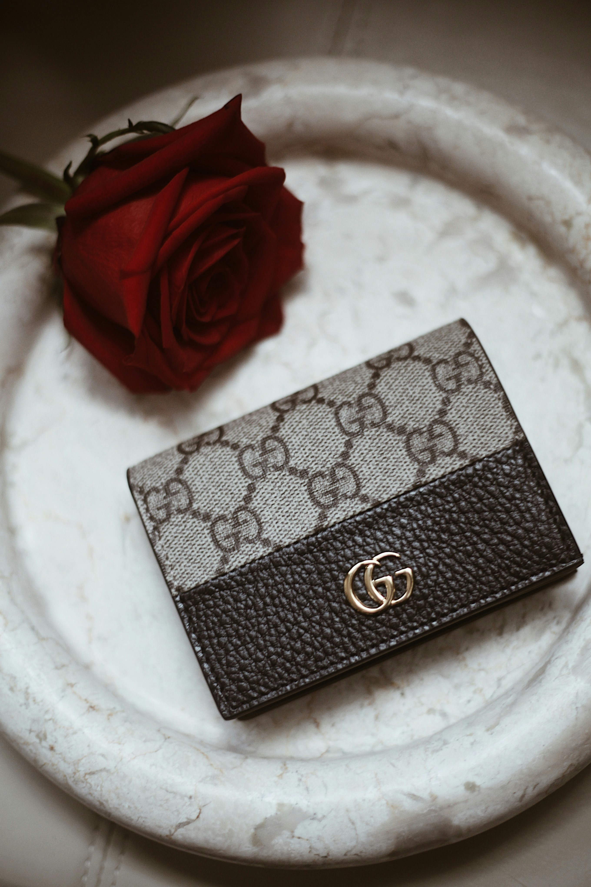
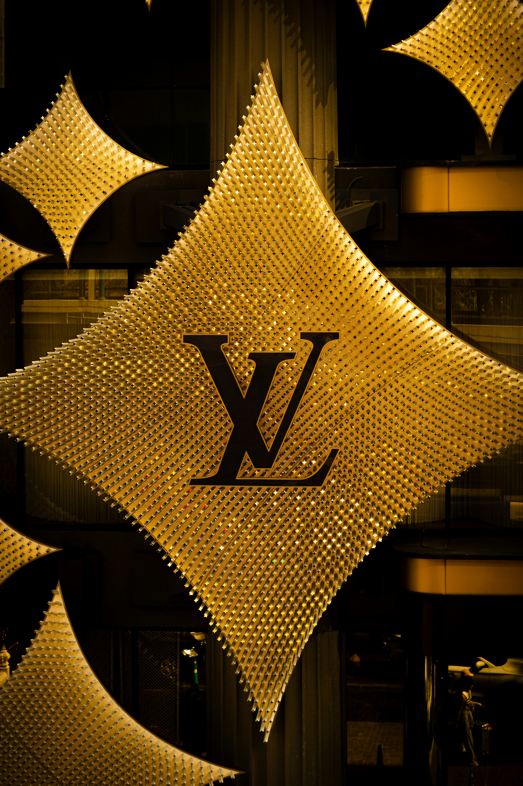
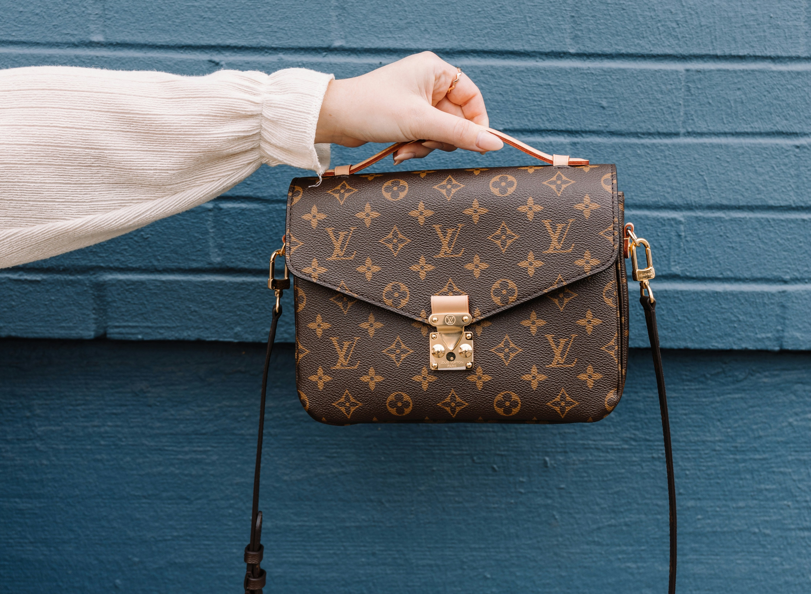
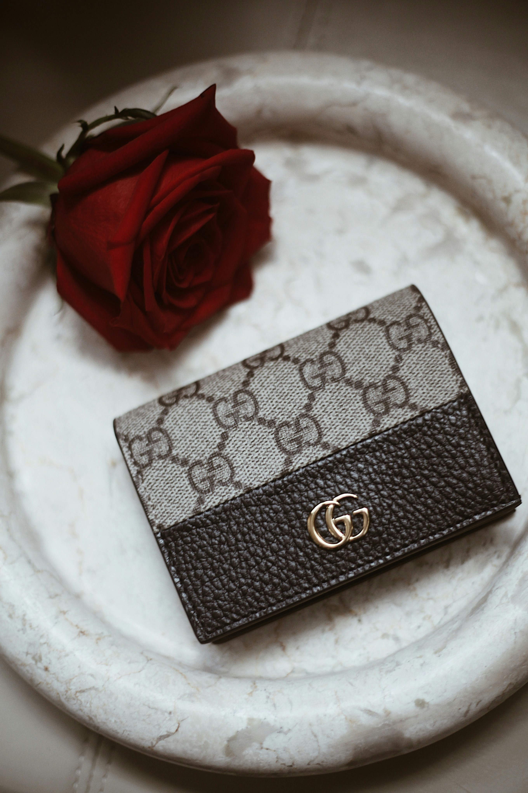
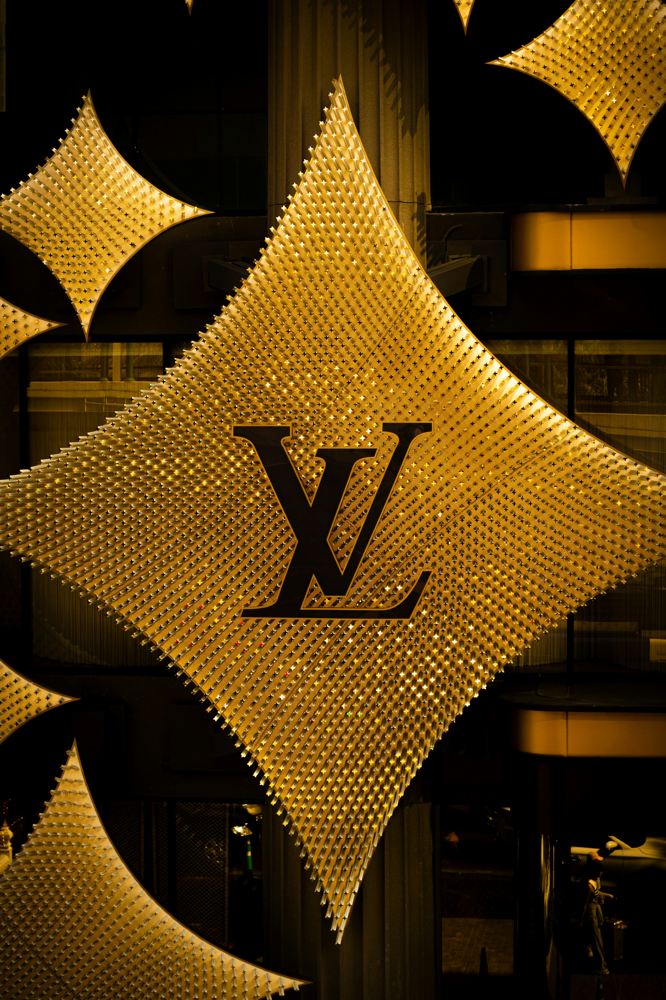
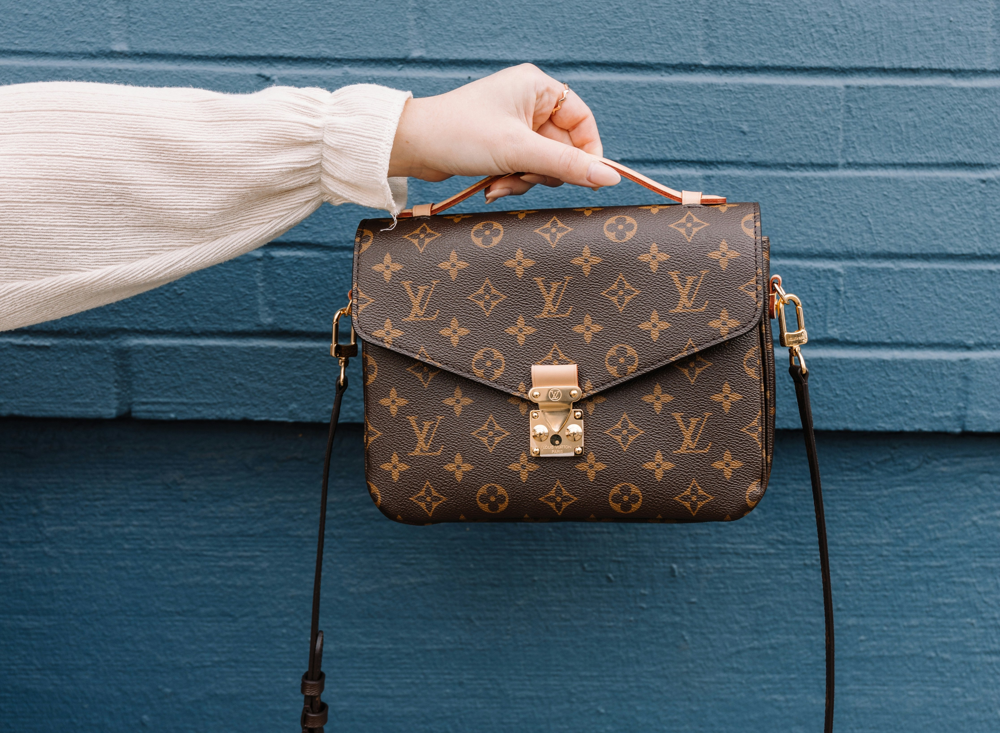

Chanel: Reinventing Elegance
Founded by Coco Chanel in 1910, Chanel revolutionized women’s fashion with the introduction of the little black dress, the Chanel No. 5 perfume, and the iconic quilted handbag. Chanel remains a symbol of effortless elegance.
Louis Vuitton: The Pioneer of Luxury Travel
What started as a luxury trunk-making business in 1854, Louis Vuitton has grown into one of the most prestigious brands in the world, known for its monogram canvas, high-quality leather goods, and trend-setting fashion collections. In 1858, Louis Vuitton introduced a revolutionary flat-top trunk, which was more stackable and durable than traditional dome-shaped trunks, transforming the way people traveled with luggage.
Gucci: Italian Craftsmanship Meets Modernity
Established in 1921 by Guccio Gucci, the brand is synonymous with bold patterns, luxurious leather goods, and innovative runway designs. Under creative directors like Tom Ford and Alessandro Michele, Gucci has continued to push the boundaries of contemporary fashion.
 




